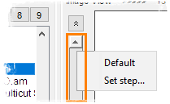

Did you know...
- A single tick of the mouse wheel changes the sliders by one step
- Holding the Shift key will change the sliders by 10 steps at the time
|  |
Many of the sliders are configurable, just press the right mouse button to call a popup menu and specify the step. By default,
|